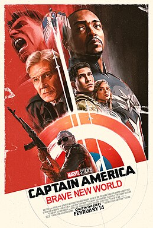
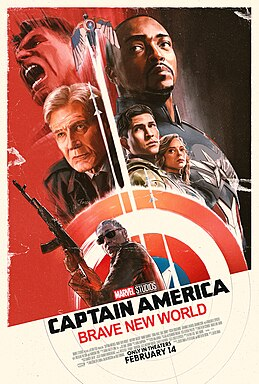

Featured Movies
 


Moana 2
GENRE
Fantasy/Romance
RUNTIME
1h 40m
RATING
7/10
SYNOPSIS
Moana journeys to the far
seas of Oceania after receiving
an unexpected call from her
wayfinding ancestors.
Better Man
GENRE
Musical/Fantasy
RUNTIME
2h 15m
RATING
7.7/10
SYNOPSIS
The true story of the meteoric rise,
dramatic fall, and remarkable resurgence
of British pop superstar Robbie Williams.
One of Them Days

GENRE
Musical/Fantasy
RUNTIME
2h 40m
RATING
7.8/10
SYNOPSIS
Misunderstood because of her green skin,
a young woman named Elphaba forges an unlikely
but profound friendship with Glinda, a student
with an unflinching desire for popularity.
Following an encounter with the Wizard of Oz,
their relationship soon reaches a crossroad as
their lives begin to take very different paths.